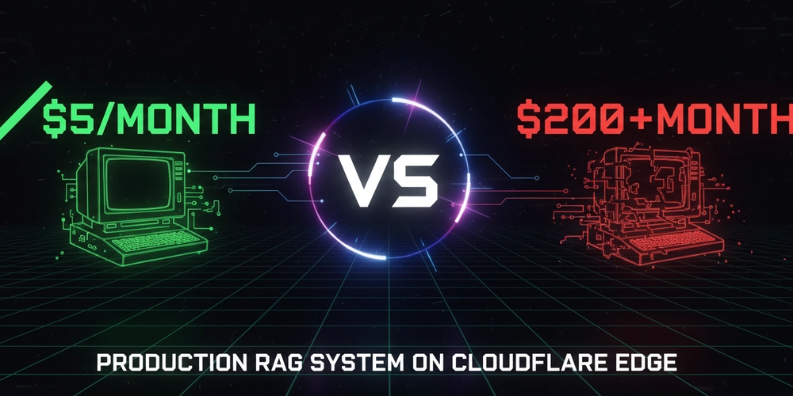

我打造了一個每月只要 5 美元的生產級 RAG 系統

太長不看
我把一個語意搜尋系統部署到 Cloudflare 邊緣，月成本約 5 到 10 美元，而常見替代方案通常要 100 到 200 美元以上。它更快、符合企業級 MCP 的可組合架構模式，也能承受正式環境流量。這篇文章整理這套做法。
問題：AI 搜尋太貴
上個月我研究了一輪常見 AI 基礎設施成本，才更清楚為什麼很多新創很難把語意搜尋加進產品。
傳統 RAG 堆疊（約每月 10,000 次搜尋）
- Pinecone 向量資料庫：50 到 70 美元/月
- OpenAI embeddings API：30 到 50 美元/月
- AWS EC2
t3.medium：35 到 50 美元/月 - 監控與日誌：15 到 20 美元/月
總計：130 到 190 美元/月。
對自籌資金的新創來說，如果只是想替文件系統加上一個「AI 搜尋」功能，往往還沒靠這個功能賺錢，就得先花 1,560 到 2,280 美元/年。
必須換一種做法。
假設：如果全部都跑在邊緣？
我一直在用 Cloudflare Workers 建 MCP 伺服器，也寫過一篇相關文章：Cloudflare Workers 上的 MCP 採樣。
當時我一直在想：為什麼 RAG 不能整套都跑在 edge？
傳統路徑太長：
User -> App Server -> OpenAI (embeddings) -> Pinecone (search) -> User
每一次網路 hop 都增加延遲，每一個服務都增加成本。
如果改成這樣：
User -> Cloudflare Edge (embeddings + search + response) -> User
所有事情都在同一個地方完成，沒有往返傳輸，也沒有閒置伺服器一直燒錢。
架構：把所有東西併在一起
我做的是一個 Vectorize MCP Worker，單一 Cloudflare Worker 負責：
- 產生 embeddings（Workers AI）
- 做向量搜尋（Vectorize）
- 格式化結果（在 worker 內完成）
- 驗證請求（內建驗證）
整個技術堆疊都跑在 Cloudflare 全球 300 多個城市的 edge 節點上。
技術堆疊
- Workers AI：
bge-small-en-v1.5，384 維 embedding 模型 - Vectorize：Cloudflare 託管向量資料庫，使用 HNSW 索引
- TypeScript：完整型別安全
- HTTP API：任何客戶端都能直接呼叫
核心程式碼
搜尋端點的簡化版如下：
async function searchIndex(query: string, topK: number, env: Env) {
const startTime = Date.now();
const embeddingStart = Date.now();
const embedding = await env.AI.run("@cf/baai/bge-small-en-v1.5", {
text: query,
});
const embeddingTime = Date.now() - embeddingStart;
const searchStart = Date.now();
const results = await env.VECTORIZE.query(embedding, {
topK,
returnMetadata: true,
});
const searchTime = Date.now() - searchStart;
return {
query,
results: results.matches,
performance: {
embeddingTime: `${embeddingTime}ms`,
searchTime: `${searchTime}ms`,
totalTime: `${Date.now() - startTime}ms`,
},
};
}
就這樣。沒有複雜編排、沒有 service mesh，只有 Workers AI 加上 Vectorize。
可組合 MCP 架構實作
最近企業 MCP 的討論裡，Workato 的系列文章反覆提到一個問題：很多實作之所以失敗，是因為它們暴露的是原始 API，而不是可組合技能。
天真 MCP 實作的問題
很多團隊會直接把現有 API 包一層後暴露出來：
get_guest_by_emailget_booking_by_guestcreate_payment_intentcharge_payment_methodsend_receipt_email- 總共 47 個工具
結果是 LLM 每個任務都得協調 6 次以上的 API 呼叫。最後就變成慢、脆弱，而且使用體驗很差。
可組合做法
相反地，這個 worker 暴露的是貼近使用者意圖的高階技能：
semantic_search：找出相關資訊intelligent_search：用 AI 合成後回傳搜尋結果
一次呼叫拿完整結果，後端自己處理複雜度。
九大企業模式中的 8 項
這個實作符合建議的 9 個企業 MCP 模式中的 8 個：
1. 業務識別優先於系統 ID
{ "query": "How does edge computing work?" }
而不是：
{ "vector_id": "a0I8d000001pRmXEAU" }
2. 原子操作
一次工具呼叫就完成整個流程：
- 產生 embeddings
- 查詢向量
- 格式化結果
- 回傳效能指標
不需要多步驟編排。
3. 智慧預設值
{
"query": "required",
"topK": "defaults to 5"
}
降低使用者的認知負擔。
4. 內建授權
if (env.API_KEY && !isAuthorized(request)) {
return new Response("Unauthorized", { status: 401 });
}
正式環境要求 API key，開發模式可以不驗證。
5. 錯誤文件化
每個錯誤都帶有可操作提示：
{
"error": "topK must be between 1 and 20",
"hint": "Adjust your topK parameter to a value between 1-20"
}
6. 可觀察效能
每個請求都會附上 timing：
{
"performance": {
"embeddingTime": "142ms",
"searchTime": "223ms",
"totalTime": "365ms"
}
}
7. 自然語言對齊
工具名稱直接對應人類說法：
- 搜尋某件事 ->
semantic_search - 而不是
query_vector_database_with_cosine_similarity
8. 防禦式組成
/populate 端點是冪等的，可以安全地重複呼叫。
基準比較
企業級可組合設計（Workato 基準）
- 回應時間：2 到 4 秒
- 成功率：94%
- 需要工具數：12
- 每個任務平均呼叫次數：1.8
這個實作
- 回應時間：365 毫秒
- 成功率：接近 100%
- 需要工具數：2
- 每個任務呼叫次數：1
差別在於：edge 部署加上正確的抽象設計。
架構原則
遵循 Workato 的一句話：
讓 LLM 處理意圖，讓後端處理執行。
LLM 職責（非確定性）
- 理解使用者查詢
- 判斷該用
semantic_search還是intelligent_search - 把結果解釋給使用者
後端職責（確定性）
- 穩定產生 embeddings
- 原子地查詢向量
- 優雅處理錯誤
- 維持穩定效能
- 管理身分驗證
這種切分方式能做出可靠、快速、對使用者友善的 MCP 工具，而不是脆弱的 API 包裝器。
結果：更快，也更便宜
效能
作者在 2024 年 12 月 23 日，從 奈及利亞哈科特港 測到 Cloudflare edge 的實際結果如下：
| 操作 | 時間 |
|---|---|
| Embedding 生成 | 142 ms |
| 向量搜尋 | 223 ms |
| 回應格式化 | < 5 ms |
| 總計 | 365 ms |
註：實際效能仍會受區域與負載影響。
成本分析
以 每天 10,000 次搜尋、也就是 每月 300,000 次搜尋 估算：
這套方案
- Workers：約 3 美元/月
- Workers AI：約 3 到 5 美元/月
- Vectorize：約 2 美元/月
- 總計：8 到 10 美元/月
傳統替代方案
- Pinecone Standard：50 到 70 美元/月
- Weaviate Cloud：25 到 40 美元/月
- 自架
pgvector：40 到 60 美元/月
整體可省 85% 到 95% 成本。
免費額度其實很夠
Cloudflare 免費方案包含：
- 每天 100,000 次 Workers 請求
- 每天 10,000 個 AI neurons
- 每月 30M 次 Vectorize 查詢
多數 side project 或小型團隊，很可能都用不到付費層。
生產環境功能
1. 身分驗證
if (env.API_KEY && !isAuthorized(request)) {
return new Response("Unauthorized", { status: 401 });
}
開發模式可不驗證，正式環境則要求 API key。
2. 效能監控
每個回應都包含 timing：
{
"query": "edge computing",
"results": ["..."],
"performance": {
"embeddingTime": "142ms",
"searchTime": "223ms",
"totalTime": "365ms"
}
}
不需要另外接 APM。
3. 自我文件化 API
打 GET / 就能拿到完整 API 文件：
{
"name": "Vectorize MCP Worker",
"endpoints": {
"POST /search": "Search the index",
"POST /populate": "Add documents",
"GET /stats": "Index statistics"
}
}
4. CORS 支援
Web 應用預設就能用，開箱即用。
已驗證的使用場景
內部文件搜尋
50 人規模的新創，文件散落在 Notion、Google Docs、Confluence。
- 之前：人工找資料，員工每天浪費 30 分鐘
- 之後：語意搜尋幾秒內找到正確文件
- 成本：5 美元/月，遠低於 Algolia DocSearch 的 70 美元
客服知識庫
一個有 500 篇支援文章的 SaaS 產品。
- 之前：關鍵字搜尋常漏掉真正相關的文章
- 之後：AI 搜尋能給出更準的匹配
- 成本：10 美元/月，低於常見企業方案的 200 美元以上
研究助理
資料庫裡有 1,000 份 PDF 論文。
- 之前：只能逐份文件
Ctrl+F - 之後：能對整個語料庫做語意查詢
- 成本：8 美元/月
我學到的事
有效的方法
1. Edge-first 架構真的有差
把所有工作都放到 edge，直接消掉多餘 hop，效能提升很明顯。
2. 可組合工具設計比 API 包裝器更好
暴露高階技能，而不是暴露原始 API，能讓系統更快也更穩定。LLM 應該處理意圖，不應該處理編排。
3. Serverless 計價模式改變很多決策
不必替閒置伺服器付費後，很多實驗都能做，突發流量也能自動擴展。
4. 簡單 HTTP 往往比花俏 SDK 更實用
沒有版本衝突，也沒有依賴地獄，直接用 curl 或 fetch 就能接。
還不夠好的地方
1. 本地開發體驗不好
Vectorize 在 wrangler dev 下不能完整運作，所以搜尋功能還是得部署後才能測。
2. 更新知識庫要重新部署
目前要改資料仍得改程式後重新部署。之後預計補動態上傳 API。
3. 384 維對特定領域可能不夠
bge-small-en-v1.5 對通用文本已足夠，但醫療、法律等垂直領域可能需要更大的模型。這是速度與精度的取捨。
成本比較細節
估算前提：
- 每天 10,000 次搜尋
- 每月 300,000 次搜尋
- 儲存 10,000 個 384 維向量
| 解決方案 | 月費 | 備註 |
|---|---|---|
| 本文方案 | 8 到 10 美元 | Cloudflare 公開價格 |
| Pinecone Standard | 50 到 70 美元 | 最低消費加使用費 |
| Weaviate Serverless | 25 到 40 美元 | 依用量計費 |
自架 pgvector | 40 到 60 美元 | 伺服器加維護成本 |
價格基準為 2024 年 12 月，實際費用仍會隨使用量變動。
如何自行部署
開源專案：
5 分鐘快速設定：
git clone https://github.com/dannwaneri/vectorize-mcp-worker
cd vectorize-mcp-worker
npm install
wrangler vectorize create mcp-knowledge-base --dimensions=384 --metric=cosine
wrangler deploy
openssl rand -base64 32 | wrangler secret put API_KEY
curl -X POST https://your-worker.workers.dev/populate \
-H "Authorization: Bearer YOUR_KEY"
curl -X POST https://your-worker.workers.dev/search \
-H "Authorization: Bearer YOUR_KEY" \
-H "Content-Type: application/json" \
-d '{"query": "your question", "topK": 3}'
線上示範：
商業價值
如果你是：
- 創業者：可以用很低成本加上 AI 搜尋，把預算集中在真正差異化功能。
- 顧問公司或代理商：可以把 AI 搜尋當成固定報價專案交付，而不是背長期基礎設施成本。
- 企業團隊：可以不等大筆預算核准，就先替部門內部知識系統加搜尋能力。
- MCP 工具開發者：可以把這個專案當成企業可組合工具設計的參考實作。
從經濟面來看，這種做法合理得多，很多以前得編專案預算的事，現在可能只比團隊一天咖啡錢多一點。
與其他方案相比
對比託管向量資料庫
像 Pinecone、Weaviate 這類服務，適合需要 RBAC、namespace 等成熟企業功能的場景。如果你要的是顯著降成本，同時保有效能，這個方案更有優勢。
對比託管語意搜尋
像 Algolia 之類的產品，適合要零維運與特定領域最佳化。如果你重視基礎設施控制、資料主權與開源，這套方案更適合。
對比從零開始自建
如果你想在 5 分鐘內得到一套可上線、符合 MCP 模式的方案，這個做法更快。如果你有高度客製需求，仍然可能需要自建。
這個 worker 主要針對以下目標做最佳化：
- 自託管基礎設施
- 透明且可預測的成本
- 企業級 MCP 可組合模式
- 完整可客製化的開源方案
接下來的方向
- 動態文件上傳 API
- 長文件語意切塊
- 多模態支援（圖片、表格）
- 完整測試套件
如果你每月在 AI 搜尋或 MCP 伺服器上已經花超過 100 美元，這個方向很值得評估。
連結
- GitHub：@dannwaneri
- Upwork：個人資料
- X / Twitter：@dannwaneri
相關閱讀：
原文：